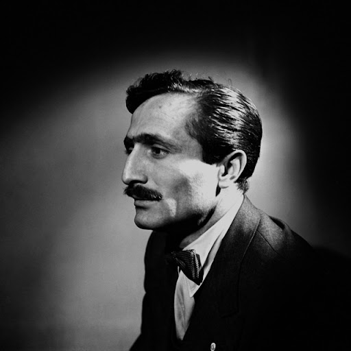

|  |
Özdemir ASAF Kimdir?
Özdemir Asaf (11 Haziran 1923, Ankara - 28 Ocak 1981, İstanbul), asıl adı Halit Özdemir Arun olan şair, çevirmen, yazar, yayımcı ve işletmeci; deneme, öykü, çeviri, şiir gibi türlerde eser vermiş Cumhuriyet dönemi Türk şairidir.
Özdemir Asaf, Hamdiye Hanım ve Şûra-yı Devlet üyelerinden Mehmet Asaf Bey’in çocuğu olarak 11 Haziran 1923 yılında ikizi Neire Özgönül Arun ile birlikte Ankara Hacıbayram’da dünyaya gelmiştir. Şair henüz yedi yaşında iken babasını kaybetmiştir. Babasının vefatı üzerine ailesi ile birlikte İstanbul'a gelmiştir. İstanbul'a geldiklerinde annesi Hamdiye Hanım Acıbadem’de babasına ait olan köşkte, Özyuva Biçki Dikiş Kursu’nu açmıştır. Bu dönemde Soyadı Kanunu da çıkmıştır. Şairin annesi Hamdiye Hanım kendileri için saf, arı, temiz anlamına gelen Arun soyadını seçmiştir. Fakat Özdemir Asaf, "r" harfini söyleyememektedir. Bu nedenle de yazılarında kendi soyadını kullanamamıştır. Özdemir Asaf, ailesi ile İstanbul’a geldikten sonra ilk olarak Fransız Erkek Lisesine kaydolmuştur. Fakat kısa bir süre sonra okul kapanınca yatılı olarak Galatasaray Lisesi'ne parasız yatılı olarak geçiş yapmıştır. , Yazar, ilk ve orta öğrenimini burada tamamlamıştır. Galatasaray'da parasız yatılı okuduğu sırada çocukluğunda geçirdiği akciğer rahatsızlığı nüksedince bir sene okula gidememiş ve parasız eğitim hakkını kaybetmiştir. Bu nedenle de son sınıfta kaydını Kabataş Lisesi'ne aldırmış ve buradan mezun olmuştur. Lisenin ardından da İstanbul Üniversitesi Hukuk Fakültesinde eğitim almaya başlamıştır. Hukuk eğitimi aldığı sırada da ilk eşi Sabahat Selma Tezakın ile tanışmıştır. Hukuk fakültesinde notlarla ilgili bir haksızlık yapıldığı için yükseköğrenimini İktisat Fakültesinde sürdürmüştür. Üçüncü sınıfta buradan da ayrılmış ve bir yıl Gazetecilik Enstitüsüne devam etmiştir fakat buradan da mezun olamamıştır.
|